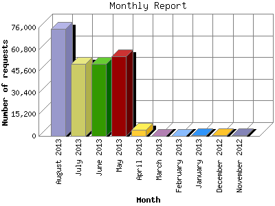

The Monthly Report identifies activity for each month in the report
time frame. Remember that each page hit can result in several server requests
as the images for each page are loaded.
Note: Depending on the
report time frame, the first and last months may not represent a complete
month's worth of data, resulting in lower hits.

| Month | Number of requests | Number of page requests | |
|---|---|---|---|
| 1. | November 2012 | 321 | 48 |
| 2. | December 2012 | 245 | 23 |
| 3. | January 2013 | 453 | 40 |
| 4. | February 2013 | 0 | 0 |
| 5. | March 2013 | 0 | 0 |
| 6. | April 2013 | 4,262 | 3,344 |
| 7. | May 2013 | 55,696 | 46,278 |
| 8. | June 2013 | 50,305 | 42,563 |
| 9. | July 2013 | 50,518 | 41,316 |
| 10. | August 2013 | 75,181 | 45,292 |
Most active month May 2013 : 46,278 pages sent. 75,181 requests handled.
Monthly average: 22,363 pages sent. 29,622 requests handled.
This report was generated on August 30, 2013 22:05.
Report time frame November 14, 2012 02:51 to August 31, 2013 05:04.
| Web statistics report produced by: analog 5.1 / Report Magic 2.21 |